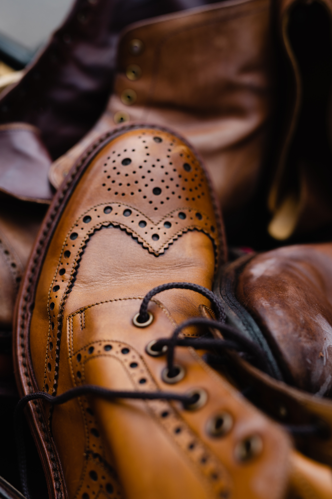

These brown brogue boots are very nice. They appear to be sitting on a pile of other shoes and one has to wonder, whos shoes are they? What has happened to the people that were wearing them? Were they abducted by aliens....? That seems like an unlikely scenario but in today's crazy world you just never know. One minute they were here and the next they were gone. They probably left family and possessions behind. I mean, what happened to the food in their fridges? It's probably gone off by now and smells pretty bad; I feel sorry for their neighbours if I'm honest.
 Probably the biggest question I have about these rather nice
Chukka boots is whether they have any feet in them.....Click
the image to find out!!
Probably the biggest question I have about these rather nice
Chukka boots is whether they have any feet in them.....Click
the image to find out!! I sometimes wonder if a black double monkstrap boot is a bit
pretentious, don't you? I mean there aren't many things you
could really wear them with. You definitely could not wear
them with shorts. Can you imagine how crazy that would look?
Taking a lovely stroll on a hot, sandy beach in paradise with
a lovely cool linen shirt on and some lovely tailored shorts.
You're on your way to get a nice cocktail to start your
evening and maybe you're wearing a nice panama hat, some cool
sunglasses and then people look at your feet and you're
wearing entirely inapproriate footwear! It would really spoilt
the image so my suggestion to you is that black double
monkstrap boots are saved for occassions that require smart
trousers! Save yourself the funny looks!
I sometimes wonder if a black double monkstrap boot is a bit
pretentious, don't you? I mean there aren't many things you
could really wear them with. You definitely could not wear
them with shorts. Can you imagine how crazy that would look?
Taking a lovely stroll on a hot, sandy beach in paradise with
a lovely cool linen shirt on and some lovely tailored shorts.
You're on your way to get a nice cocktail to start your
evening and maybe you're wearing a nice panama hat, some cool
sunglasses and then people look at your feet and you're
wearing entirely inapproriate footwear! It would really spoilt
the image so my suggestion to you is that black double
monkstrap boots are saved for occassions that require smart
trousers! Save yourself the funny looks!
 Now, this is a serious boot for serious people. This boot
really is designed for people who are out in the hills or
mountains, or maybe people in construction or timber yards,
that kind of thing.
Now, this is a serious boot for serious people. This boot
really is designed for people who are out in the hills or
mountains, or maybe people in construction or timber yards,
that kind of thing.  I'm actually wondering if this person knows how to tie boot
laces really. I mean, they seem to be doing an ok job but I'm
not sure if they would stayed laced up curing rigourous
activity, chasing a badger for instance. I'll bet that can get
quite intense and the last thing I'd want when faced by an
angry badger is for my bootlace to come undone and cause a
trip hazard. That would be no joke and a serious health and
safety hazard, both for me and the badger. Can you imagine if
you fell on a badger and injured it, I suppose if you were in
conflict with it though it would be a kind of win. But I hear
the best way to deal with an agry badger is to sing to it
anyway so maybe it'd be best to ensure your boots are properly
laced up in the first place.
I'm actually wondering if this person knows how to tie boot
laces really. I mean, they seem to be doing an ok job but I'm
not sure if they would stayed laced up curing rigourous
activity, chasing a badger for instance. I'll bet that can get
quite intense and the last thing I'd want when faced by an
angry badger is for my bootlace to come undone and cause a
trip hazard. That would be no joke and a serious health and
safety hazard, both for me and the badger. Can you imagine if
you fell on a badger and injured it, I suppose if you were in
conflict with it though it would be a kind of win. But I hear
the best way to deal with an agry badger is to sing to it
anyway so maybe it'd be best to ensure your boots are properly
laced up in the first place.